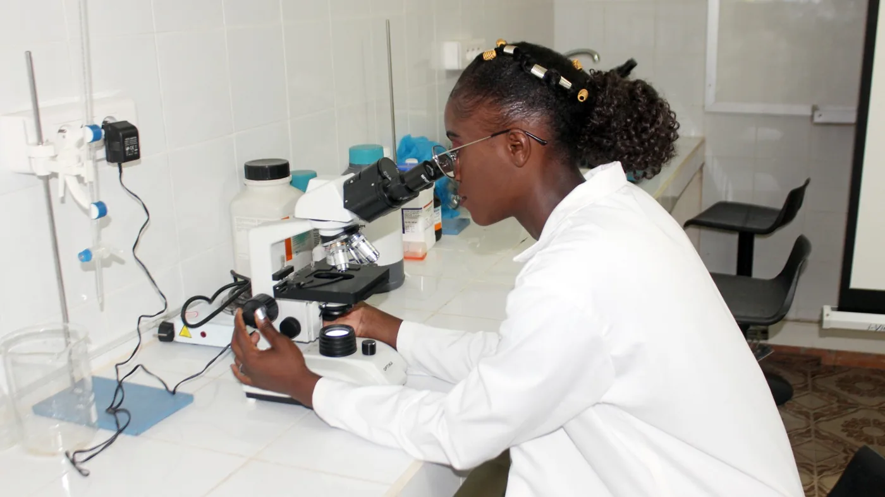
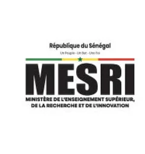
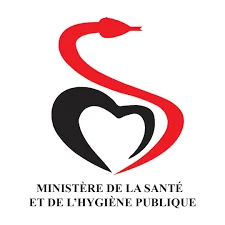
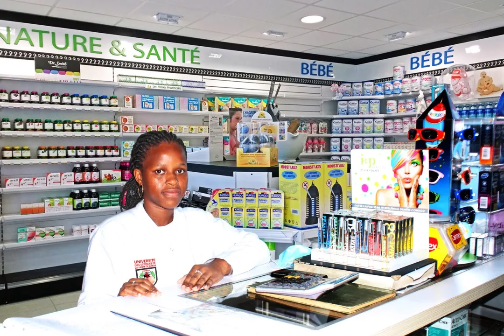

Université des Sciences
de la Santé de Dakar
L’excellence, notre credo.
Dakar, Sénégal · depuis le 29 mars 2016
L’excellence, notre credo.
Dakar, Sénégal · depuis le 29 mars 2016

Ce que nous offrons
Deux diplômes d’État.
L’hôpital dès les premières années.
Votre avenir
Soigner demain
commence ici.
Médecine et pharmacie — deux diplômes d’État, à Dakar.
L’excellence, notre credo.
Rentrée le 5 octobre · candidatures jusqu’au 15 septembre
Acte 1 sur 3 : qui sommes-nous.
Le parcours
C'est la question que posent toutes les familles : combien de temps, et à quel moment commence l'hôpital ? Voici la réponse, sans détour.
Anatomie, biologie cellulaire, biophysique, chimie. Le socle scientifique.
Premier contact avec le patient et le vocabulaire clinique.
HôpitalÉtude des grands appareils et des mécanismes de la maladie.
HôpitalSpécialités médicales, démarche diagnostique, thérapeutique.
HôpitalChirurgie, urgences, gynécologie-obstétrique, pédiatrie.
HôpitalÉpidémiologie, médecine communautaire, stages en région.
HôpitalResponsabilité progressive auprès des patients, sous supervision.
HôpitalTravail de recherche et soutenance. Délivrance du diplôme d'État.
HôpitalChimie, physique, biologie, mathématiques appliquées à la santé.
Formulation, contrôle qualité, travaux pratiques en laboratoire.
LaboratoireMécanismes d'action, interactions, agents infectieux.
LaboratoireHématologie, biochimie clinique, immunologie, parasitologie.
HôpitalDispensation, suivi thérapeutique, santé publique du médicament.
OfficineStage professionnel long, mémoire de recherche et soutenance.
HôpitalCycle Licence Cycle Master Cycle Doctorat Hôpital immersion en milieu professionnel
Ce qui nous distingue
Plus de la moitié des actionnaires de l'USSD sont des enseignants-chercheurs et des professionnels de santé en exercice — médecins et pharmaciens des secteurs public et privé.
Cette gouvernance n'est pas un détail administratif : elle décide du contenu des enseignements, de l'exigence des évaluations et de la qualité des terrains de stage. Les personnes qui conçoivent la formation sont celles qui exercent le métier.
« L'excellence, notre credo. » Devise de l'Université, inscrite au blason
Reconnaissances officielles


Les stages se déroulent dans les structures partenaires de l'Université.
Sélection de structures partenaires. La liste complète des quinze terrains de stage est en cours de publication.
Formations
 8ans
8ans
Licence — Master — Doctorat
Former des médecins compétents et éthiques. Enseignements théoriques rigoureux, travaux pratiques et stages hospitaliers immersifs dès les premières années.

6ansLicence — Master — Doctorat
Former des pharmaciens engagés pour la santé publique. Théorie, pratique en laboratoire, stages hospitaliers et officinaux pour maîtriser le médicament.
Actualités & agenda

Accueil des nouveaux étudiants sur le campus de Point E et ouverture des accès au portail numérique de suivi des études.

Dépôt des dossiers au secrétariat du campus, par e-mail ou via WhatsApp, dans la limite des places disponibles.
Une semaine de manifestations scientifiques, culturelles et sociales, avec un colloque international sur la formation en sciences de la santé en Afrique.
Espace numérique
Emploi du temps, notes, ressources pédagogiques, attestations et vérification de diplôme. Réservé aux étudiants inscrits, aux enseignants et au personnel.
Bacheliers des séries scientifiques, toutes nationalités. Trois étapes : constituer le dossier, le déposer, recevoir l'autorisation d'inscription.